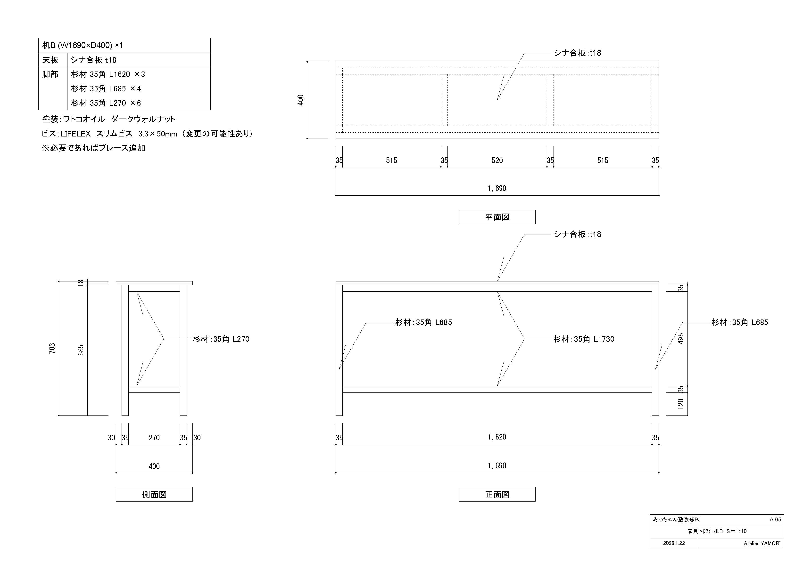
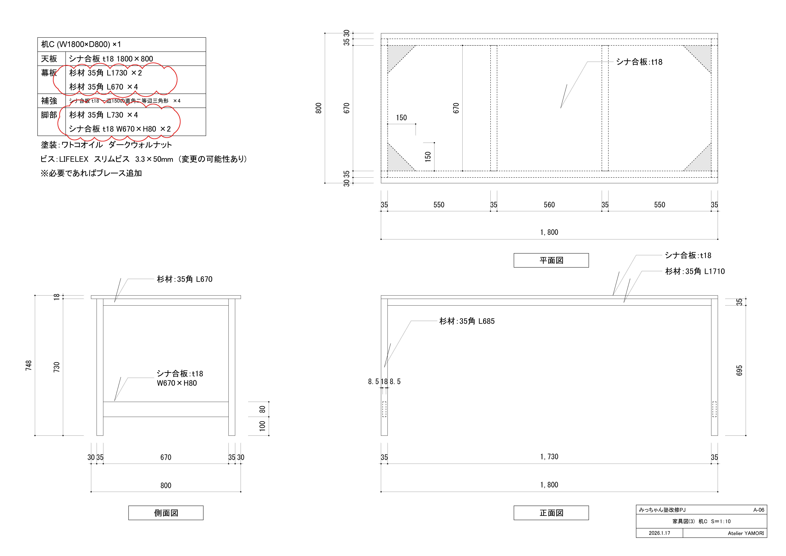
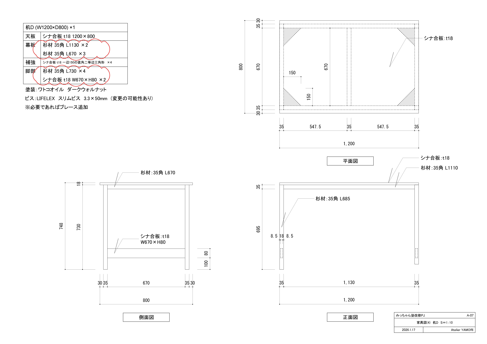
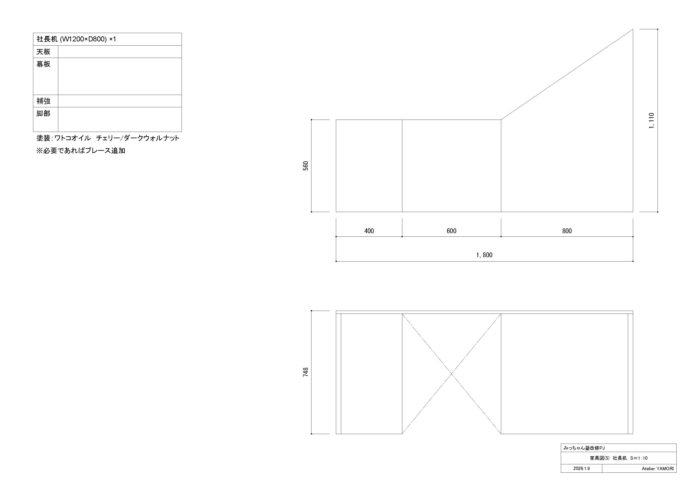
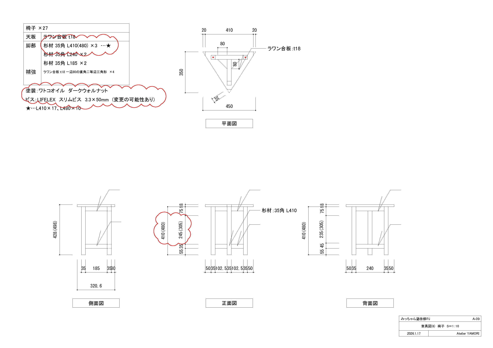
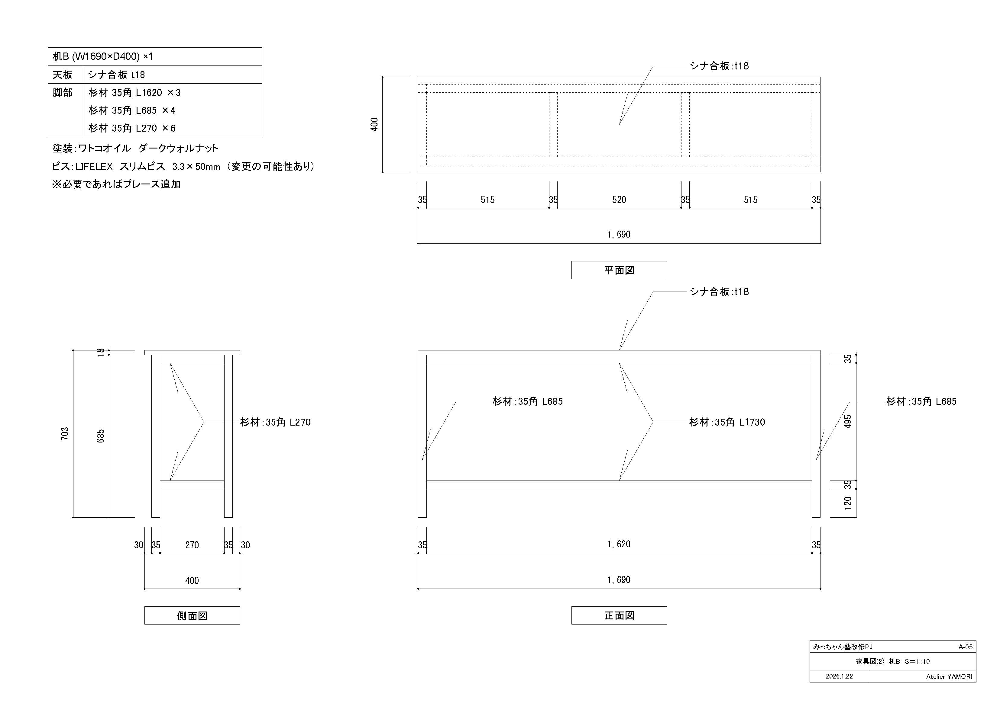
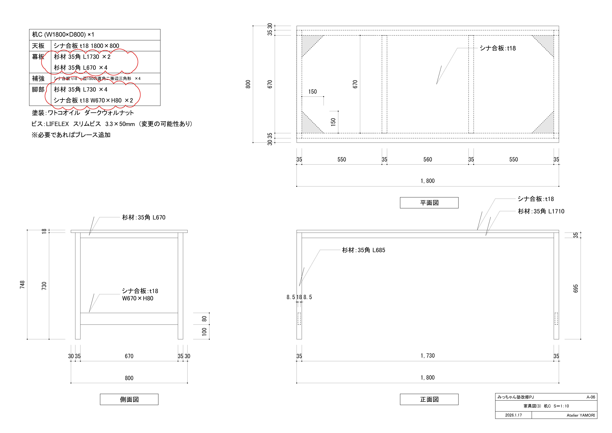
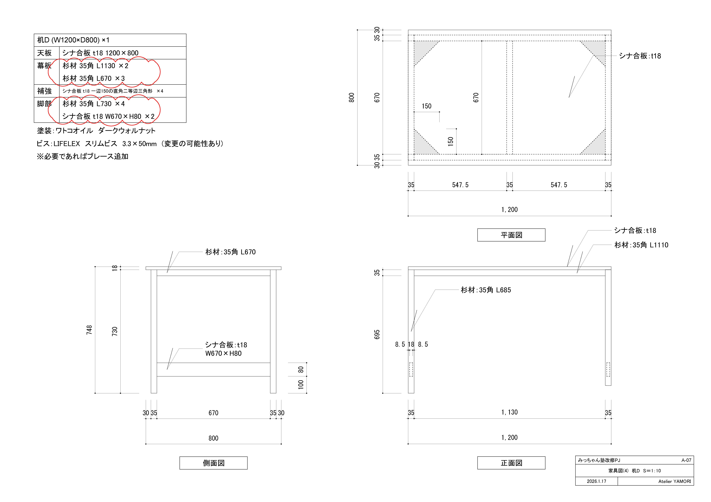
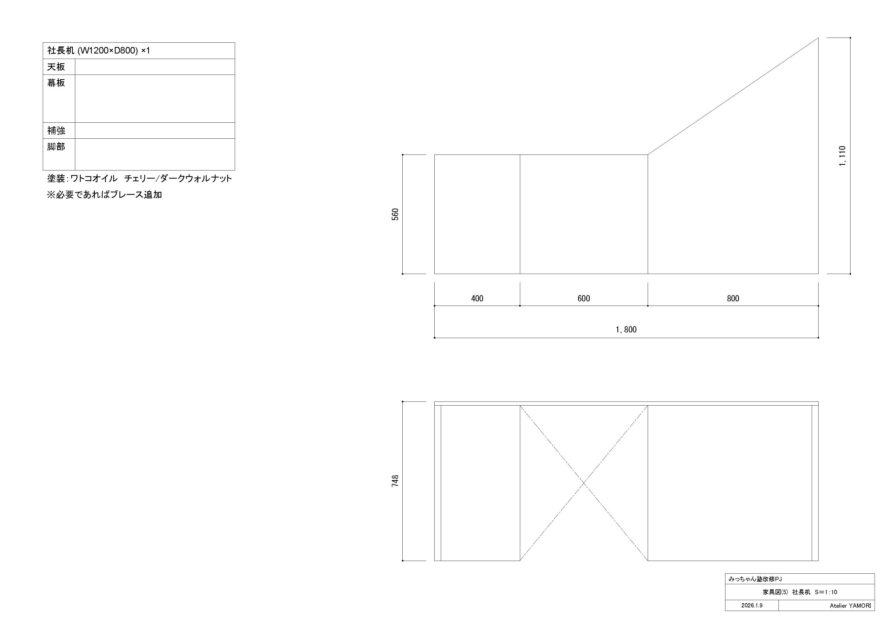
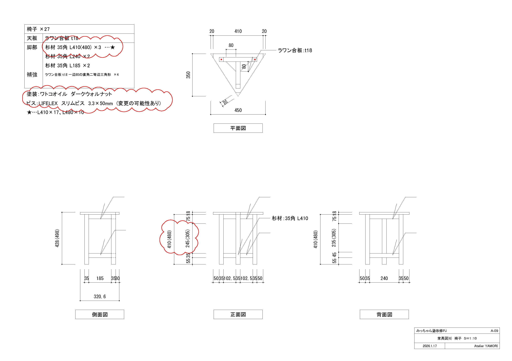

みっちゃん教室 椅子と机
椅子と机の設計と自主制作。
塾をなるべく広く見せること、露出している配線と机を上手く嵌めること、限りあるスペースになるべく多くの生徒が座れるようにすること、10万円ほどで全て制作すること。
これらを目標に設計を行う。椅子の背もたれはなくし、座面も姿勢を良くするために三角形に。
机の天板の奥行きは400mmに設定し無駄なスペースを限りなくゼロにする。
幅1800mmの天板に生徒が三人並んで座れるように机の脚は天板の両端に揃える。
比較的安価な野縁材：赤松35角を椅子、机共に使用。椅子はラワン合板、机の天板はシナ合板。いずれもt18。接合はビスと金具。
金具は使用しない予定であったが強度不足のため変更。死ぬほど使った。
生徒が触れても安全になるようにやすりを丁寧にかける。あとは生徒を増やすのみ。
［はじめてのDIY］
 








